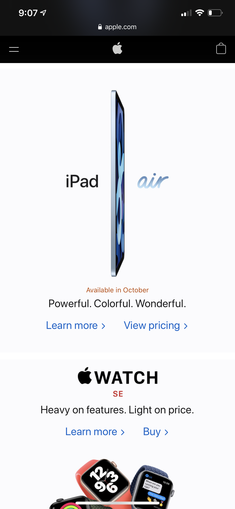
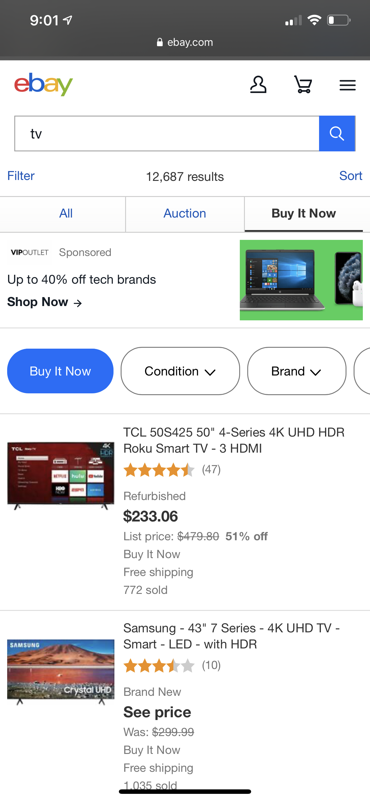

Visual Hierarchy
Yahoo News
I chose the Yahoo News Homepage as an example of Visual heirarchy because if you look at the picture on the top as well as the text that goes with it, It seems to be the most important information that the company has chosen to promote over the ones that appear to be smaller. Someone looking for something more recent would be more inclined to click on it simply because it appears on the top and has a larger image than the ones on the bottom.
White Space
Apple Home Page I chose Apple's Homepage for this example because the white space provides the opportunity for the product being advertized to be properly highlighted to the intended audience without any form of noise or distractions coming from other colors in the background.
Hick's Law
Ebay Search Page I choose the ebay search page as an example of Hick's Law because of the option of narrowing down choices to one's specific taste. In a world of a multitude of choices, the filter option makes it easy to bring specific choices to the end user based on lifestyle, budget brand loyalty, and many other factors. Also, the buttons are not overwhelming.